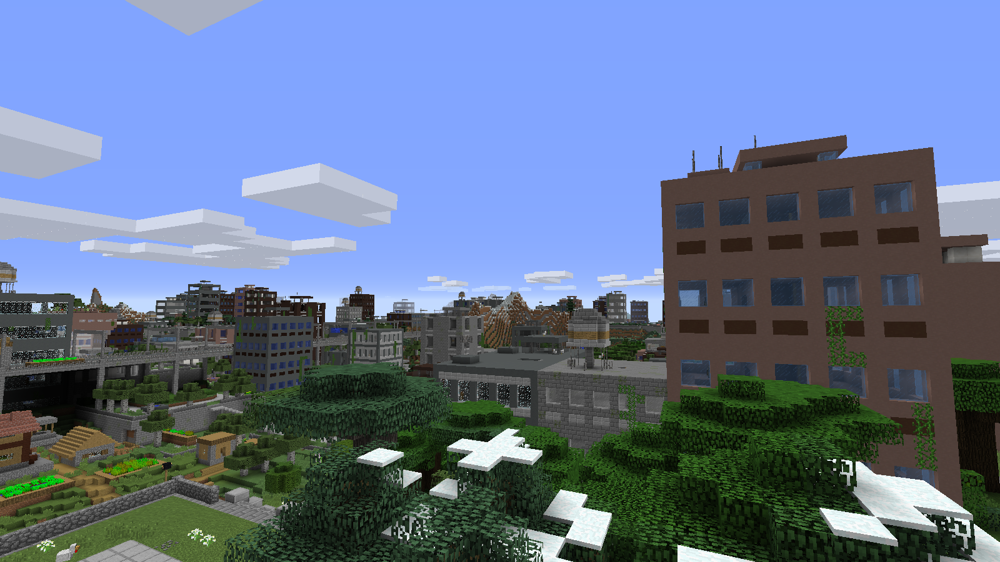
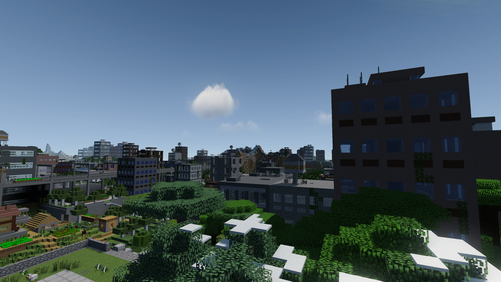
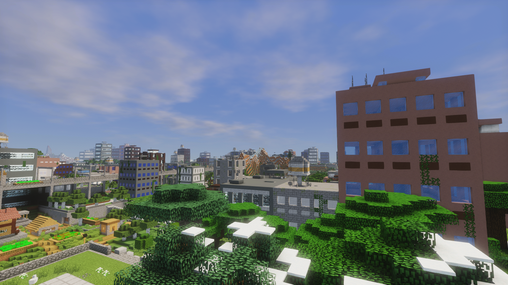
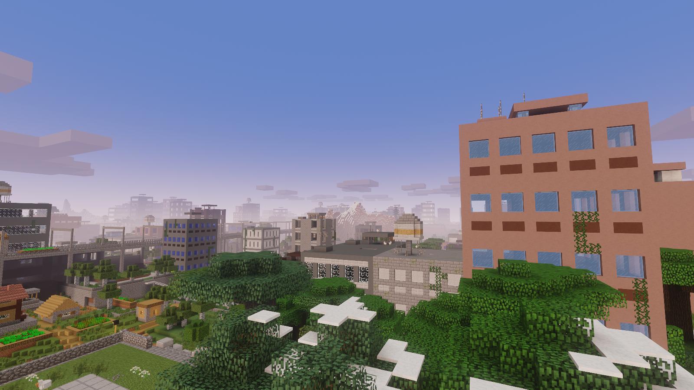
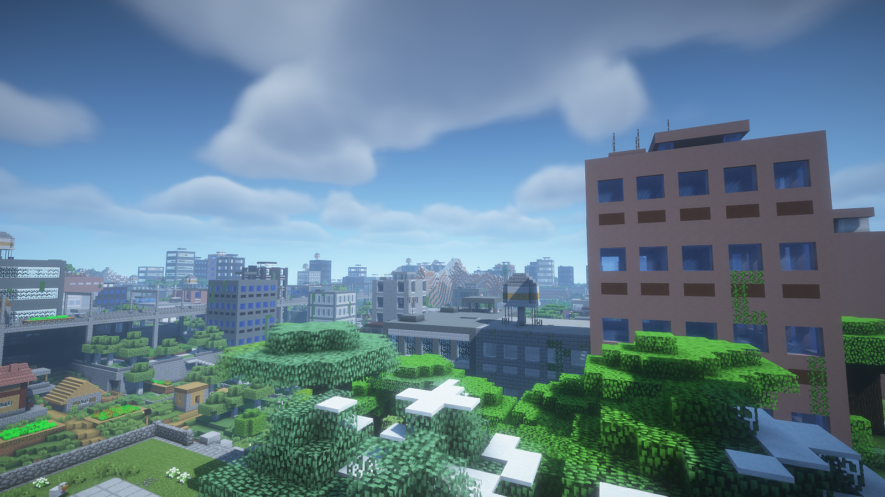
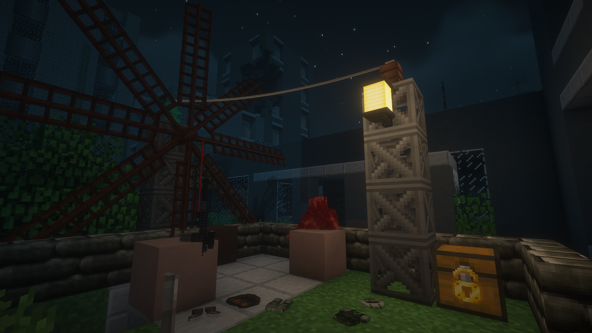
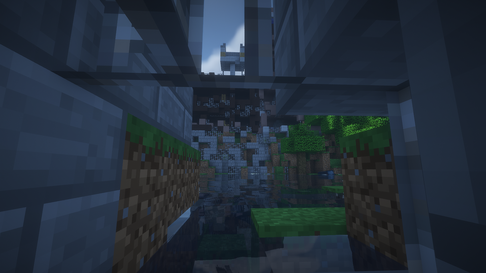
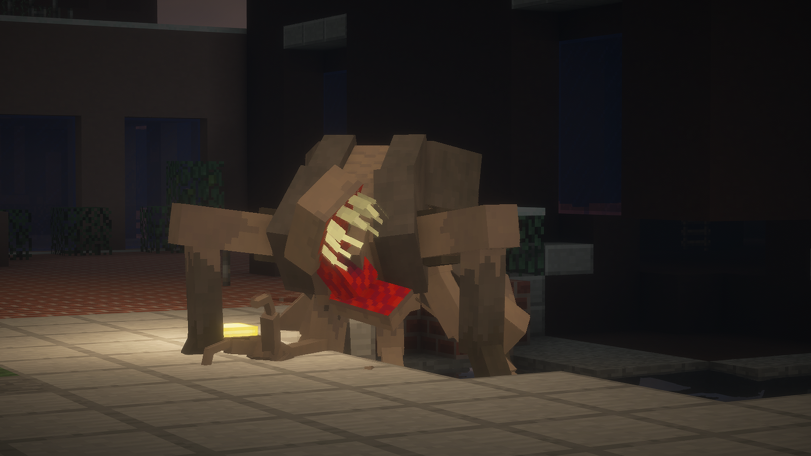
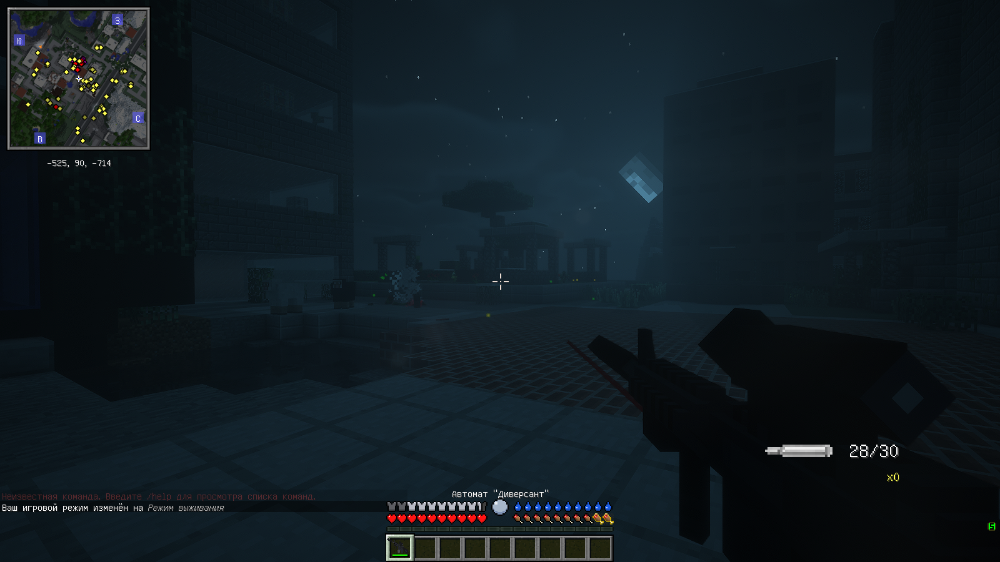
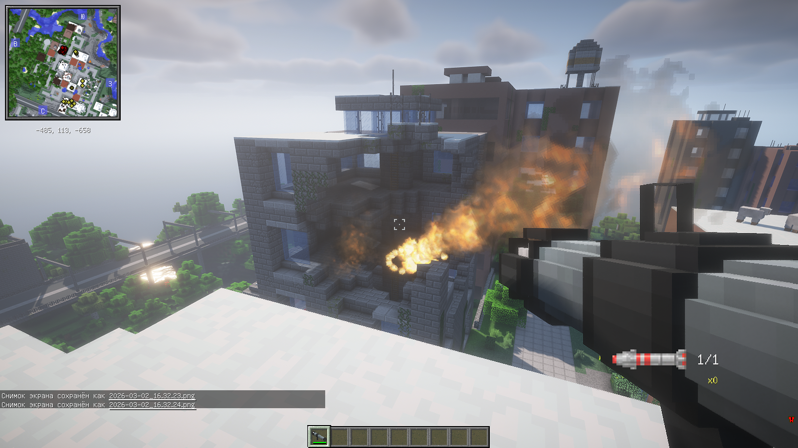

История мира: Эпоха забвения
Всё было прекрасно. Человечество развивалось стремительными темпами: возводились мегаполисы, расцветала индустриальная эпоха, новые технологии обещали светлое будущее... Пока военные не обнаружили его. Новый вирус, способный заразить всё живое. Поначалу на угрозу смотрели сквозь пальцы, ведь вирус поражал только животных. Учёные проводили эксперименты, и результаты ужасали: после смерти заражённые существа выделяли странную жидкость, которая разъедала материалы, а затем превращалась в гротескные организмы, питающиеся окружающим миром.
Спустя пять лет эксперименты вышли из-под контроля. Паразиты эволюционировали, став невосприимчивыми к ранним противоядиям. Настоящий ад начался, когда микроорганизмы научились заражать людей — не десятками или сотнями, а тысячами. В довершение всего, паразитарная инфекция вступила в симбиоз с подавленным ранее зомби-вирусом. Защищаться стало некому.
Наступили тёмные времена. Оставшиеся в живых разделились на три группы:
- Жертвы: Обычные жители, пытавшиеся выжить в этом аду, но быстро погибшие из-за беспомощности и нехватки ресурсов.
- Сталкеры: Те, кто сумел адаптироваться. Они сильны, циничны и никогда не ходят в одиночку, прочёсывая руины в поисках наживы.
- Военные: Последний оплот порядка. Вооружены до зубов, пытаются истребить паразитов и всех, кто встанет у них на пути, включая сталкеров.
Первая группа — жертвы — практически полностью вымерла. Миллионы километров цветущих городов превратились в пустыню. Заброшенные торговые центры, небоскрёбы и жилые кварталы теперь хранят лишь эхо прошлого.
Этот мир не прощает ошибок. Мир, где никто не пойдёт за тебя. Лишь ты сам можешь построить своё убежище и выжить там, где надежды больше нет. Убивай, или будь убитым.
О сборке
PAWorld — это уникальная сборка, сочетающая в себе продвинутые оружейные системы (форк TechGuns от сообщества), мутирующих паразитов из мода SRParasites и тщательно выверенный баланс. Мод SRParasites Extra позволяет регулировать сложность паразитов, а оружие специально настроено для их истребления. При этом паразиты не ломают блоки — никакого дисбаланса!
Атмосфера ностальгии по версии 1.12.2 дополняется глубоким лором, который создаёт мод LostCities, генерирующий руины городов. Выживание становится настоящим испытанием благодаря Tough as Nails (жажда, температура) и Serene Seasons (смена сезонов). Зимой вам точно не позавидуешь!
Реализма добавляют мелочи: Passable Leaf позволяет проходить сквозь листву, Hardcore Glass поранит вас, если попытаетесь разбить стекло голыми руками, а Freelook даёт оглянуться на бегу (зажимайте Alt) — вдруг за вами кто-то следит...
Для хранения механизмов из Immersive Engineering предусмотрены рюкзаки из мода Useful Backpacks.
Особенности геймплея
Сборка включает 50 модификаций, направленные на максимальное погружение и хардкорное реалистичное выживание. Забудьте о легкой добыче ресурсов: здесь даже нельзя просто срубить дерево голыми руками — вам придется искать обходные пути и приспосабливаться к суровым условиям. В вашем распоряжении будут классные красивые рюкзаки для длительных экспедиций вглубь заброшенных мегаполисов, а каждое действие требует тщательного планирования. Баланс настроен так, что вы не просто строите, вы выживаете в агрессивной среде, где каждый шаг может стать последним.
Прорывные шейдеры
В сборке предустановлены одни из лучших шейдерпаков для версии 1.12.2, оптимизированные даже для бюджетных видеокарт (например, RX 550 / GTX 1050). Передвиньте ползунок, чтобы сравнить графику без шейдеров и с ними.


* Это лишь один из вариантов. Также доступны мрачный шейдер для слабых ПК и альтернативная версия для максимальной красоты.
Другие шейдеры в сборке




Важно: Клиентская часть сборки легка даже для слабых ПК, но в одиночной игре (или на сервере) нагрузка на CPU возрастает из-за генерации чанков — учитывайте это.
Скриншоты геймплея





Системные требования
Сборка была обновлена 5 марта в 18:30, поэтому сис. требования были также увеличены.
ДЛЯ КЛИЕНТА : 8гб озу (4гб выделенной), двух-ядерный процессор (от 2.0ггц), видеокарта - Если без шейдеров, пойдет любая затычка по типу GT710. Если шейдеры, то точных рамок нет, но на RX570 показывает 50-60фпс с ультра пресетом шейдеров.
ДЛЯ СЕРВЕРА : Из изменений по сравнению с клиентом, нужно вдвое больше ОЗУ (Хотя-бы 8гб выделенной памяти), и 6-ядерный процессор с хорошим L3 кэшем (от 3.0ггц частоты). Желательно SSD!
Скачать сборку
✧
С этого момента доступен только этот вариант сборки. Файл имеет формат .zip — открывается через Prism Launcher.
Безопасность: Сборка полностью безопасна для вашего компьютера. Все моды взяты из официальных источников (Modrinth и CurseForge). Исключения — OptiFine и FreeLook, которые также загружены с их официальных сайтов. В Prism Launcher вы всегда можете проверить источник каждого мода в комментариях.
⇓
Как узнать, какой хэш (SH256) у файла?:Просто зайдите в папку, где вы скачали мою сборку, запустите в папке терминал (PowerShell!) и выполните данную команду : Get-FileHash "имя_сборки.zip" -Algorithm SHA256, заменив "имя_сборки.zip" на свое название сборки.
⇓
SHA256 сборки: DD11AE4807D8227E0F8E58C1D371B49C8244180A4E0C9790F0A462A177F895E2